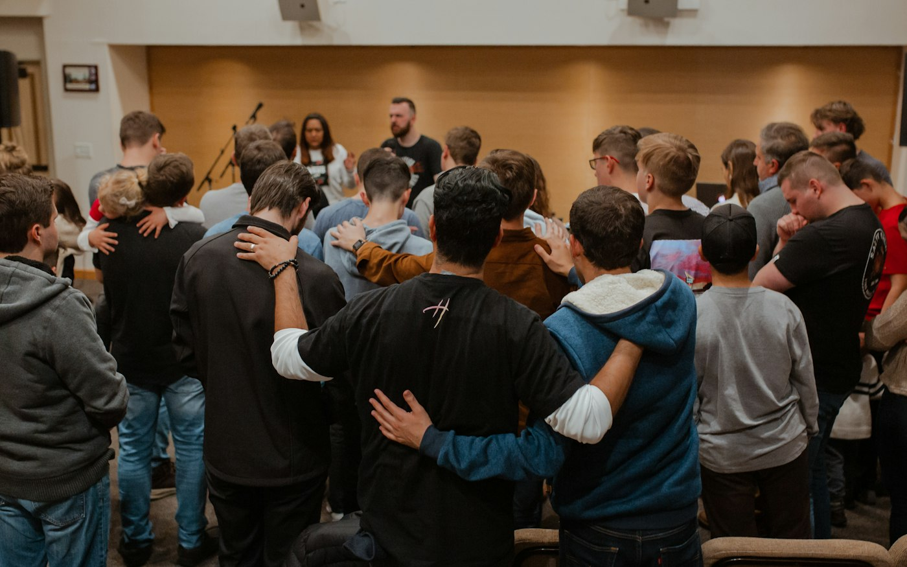

Rooted in Grace
For more than 175 years, St. Matthew's has gathered Charleston's faithful for reverent worship, expository preaching and the fullness of sacramental life. Come and find the depth you've been searching for.

Charleston
A place of depth in the heart of Charleston
“There's a depth here I haven't felt in a long time.”What visitors often tell us
That is no accident. It is the fruit of faithful, expository preaching and a liturgy shaped by centuries of Reformed worship. Whether you are returning to faith or searching for the first time, St. Matthew's is a place where the Word is honoured, the sacraments are cherished and every soul is genuinely welcomed.
Find your place
There is a place at St. Matthew's for every season of life. Here are a few ways to begin.
Sunday
Experience
Services follow a traditional liturgical order — Scripture, prayer, proclamation and the Lord's Supper — led with reverence by Rev. Dr. James Whitfield.
Plan Your VisitChildren's
Ministry
Age-appropriate classes where children meet Scripture, song and the beauty of the Reformed faith, in a safe, checked-in environment led by trained teachers.
Learn More
Groups &
Ministries
From Wednesday Evening Prayer to small-group fellowship, there are many ways to grow in faith, serve your neighbour and build lasting friendships.
Explore MinistriesWorship that anchors your week
Ready to take the next step?
We would be honoured to welcome you in person. Come as you are — whether this is your first visit or you're ready to call St. Matthew's home.
- Easy parkingFree parking in our Church Street lot, with greeters at the gate.
- About 75 minutesArrive ten minutes early and we'll help you find a seat.
- Kids are welcomeNursery and children's classes during the 11:00 service.
- Coffee afterStay for coffee in the courtyard and meet the pastors.